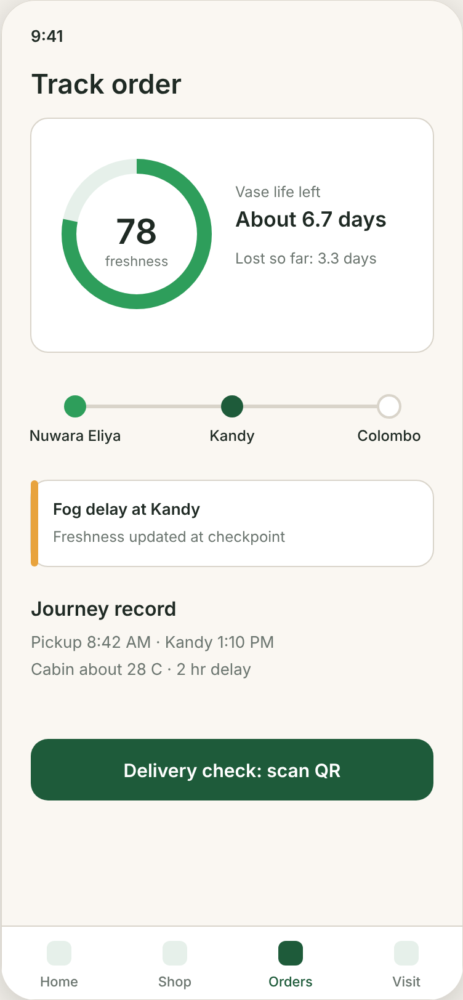
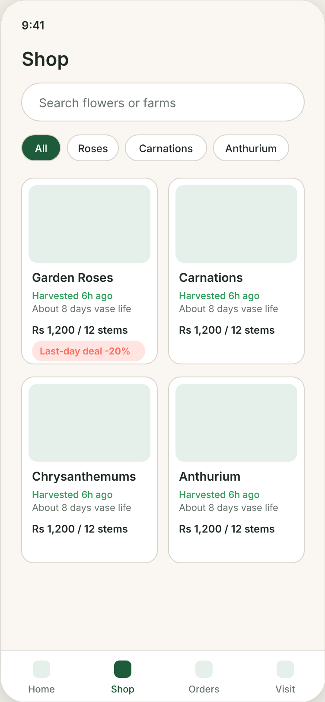
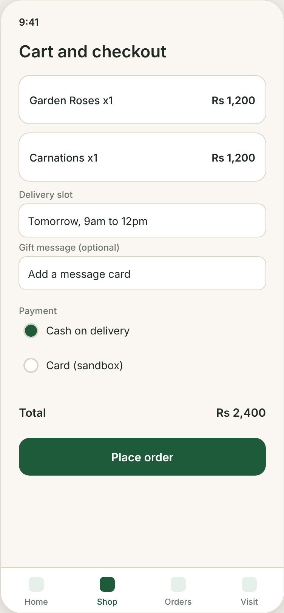
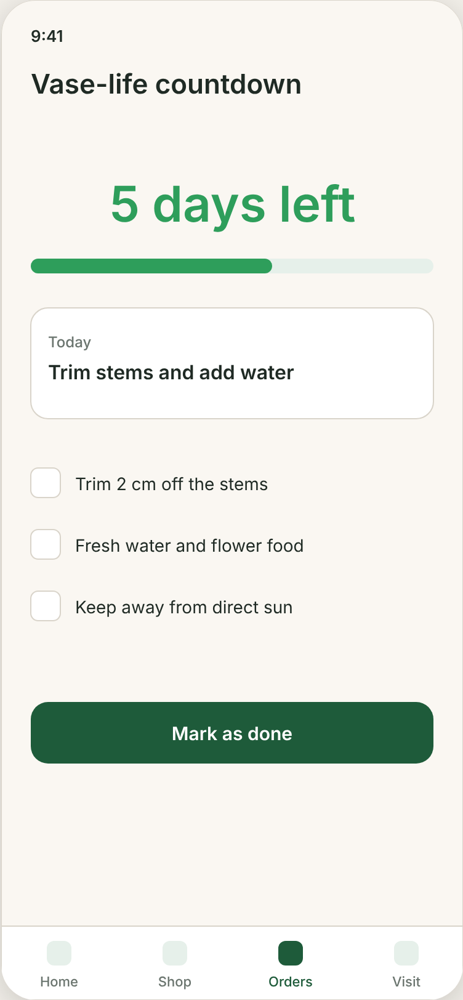
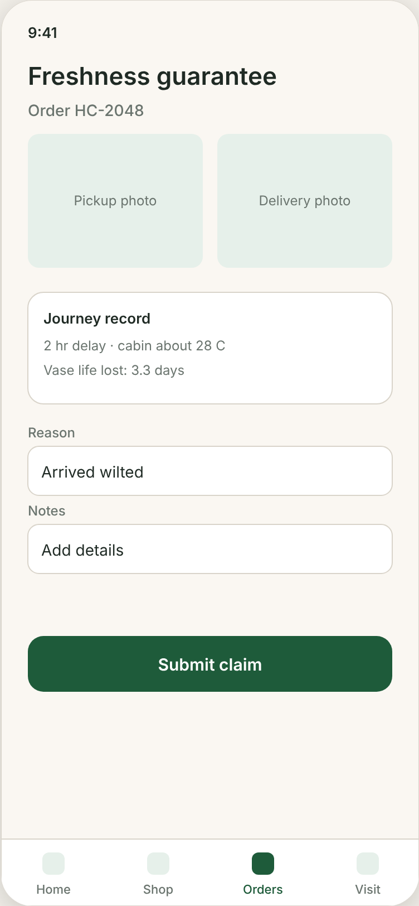
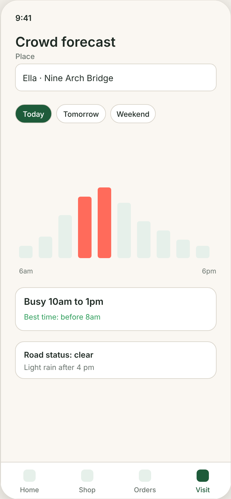
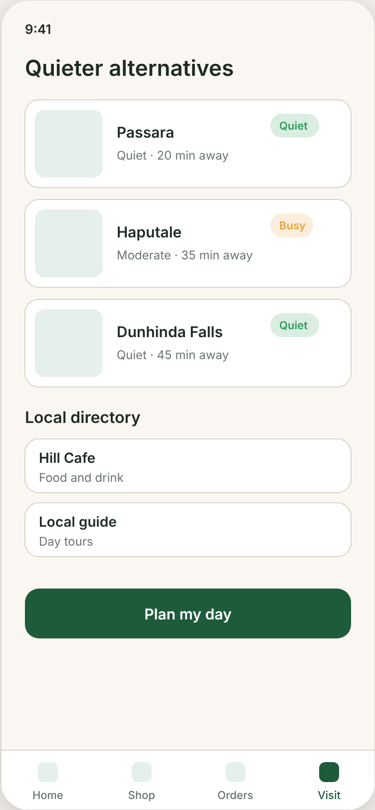

Know how fresh your flowers are, from farm to vase.
Hill Country Connect tracks flowers on the road from the hills, shows buyers the vase life they will really get, and backs it with a freshness guarantee. The same platform helps visitors dodge crowds, fog and closures.
Fresh from the hills, tracked all the way.

Flowers lose their life on the road, and nobody can see it
Heat, delays and rough roads
Hill-country flowers travel for hours through fog, landslide-prone roads and warm lowland heat. Every hour in the heat shortens the days a bouquet will last.
Buyers can't tell what they'll get
Florists, hotels and shoppers only find out on arrival. There is no record of the journey, so disputes become one person's word against another's.
Visitors crowd the same few places
Ella and Horton Plains get packed while quiet places nearby go unseen, and travellers get caught out by weather and closures.
How Hill Country Connect solves it
Register and track
Farmers register a batch and get a QR code. Drivers check in at checkpoints, so the journey is recorded without constant GPS.
Estimate freshness
A freshness score is estimated from time, temperature, weather and delays, with photos at pickup and delivery as a check.
Buy with proof
Buyers see the score before and after checkout, follow the order, and claim a refund with the journey record if flowers arrive worse than promised.
Key features
Screens from our high-fidelity prototype. Open the clickable prototype.




Order tracking
Live freshness and journey, with delay alerts.
Smart dispatch
Cooler departure advice using weather and road hazards.
Seller dashboard
Inventory, orders and earnings for farmers.
Visit mode: explore the hills without the crowds
The same weather, road and crowd data helps visitors plan better days.
- Crowd forecast for popular hill-country sites
- Weather, fog and road-hazard status
- Quieter alternatives nearby
- A local business directory that helps small places get found


The team
Five Informatics Institute of Technology students building this as our Agile Team Project.
Piyumi
Writing and documentation lead
Bimsa
Business analyst
Nithiksha
Agile lead
Thrisha
Solution architect
Senupama
Design and web
Join the waitlist
Farmers, florists, buyers and travellers: tell us you're interested and we'll update you as we build.